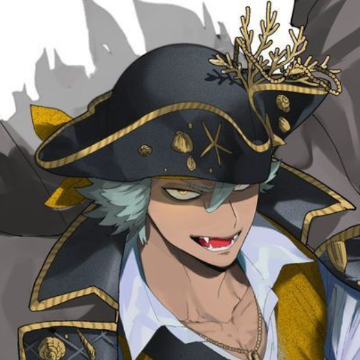
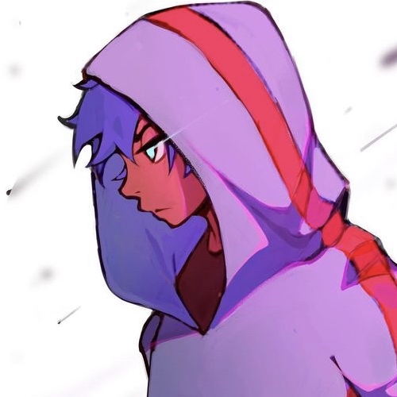
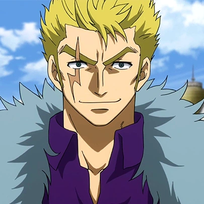

[ Demographics ]
The Tempest Pirates are a Pirate-crew led by Velyrea D. Elizabetha (True Name: Yesenia Celeste) composed of seven persons that was formed on Gale Island.
Despite being a recent crew, and thus not having a bounty that large nor a good amount of accomplishments, the Tempest Pirates are still considered a threat because of their captain’s status; Yesenia is the daughter of a former Celestial Dragon, who was experimented on as a punishment for leaving Marījoa, the goal of the experiments being the creation of a weapon to use against the Revolutionary Army.
Because of that being a secret, the World Government left Velyrea in the Level 1 of Impel Down: The Crimson Hell, which she eventually escaped from thanks to her wings, a result of the experiments done on her mother before her birth.
The fact that Velyrea is a secret weapon of the government and an Impel Down escapee, while not making a lot of noise on the world due to the W-G silencing everything, still makes her a huge threat due to her memories and knowledge, and thus became a target, unknowingly becoming one of the biggest threats to the World Order.
In conclusion, despite being a fairly recent crew, the Tempest Pirates are still considered a huge threat due to the status of their captain.
[ Jolly Roger ]
Not decided yet
[ Crew Members ]
Main Crew
The Tempest Pirates are led by Yesenia Celeste, with the vice-captain being Alco Vinsmoke. Their crew was formed for the occasion of the Gale Festival, a huge event which defined the ruler(s) of the entire Gale Island.
Despite not knowing what a Captain even is due to her poor education, Velyrea will propose to become the leader of the crew, with each member agreeing due to different reasons.
Tempest Pirates
|
|
 |
 |
|
| Yesenia Celeste |
Alco Vinsmoke |
Chalybe D. Dorei |
Helios Johnson |
Kiko Samui |
|
 |
|
|
|
| Ryori Sarugami |
Keno Kleinstein |
|
|
|
Companions
Ships
Allies
The Tempest Pirates contain a lot of very different people, like having a former Celestial and a member of the D. Clan under the same roof, which makes them one of the most unpredictable crews on the sea at the moment.
Sub-Groups
[ Crew Strength ]
Fighting Capabilities
The Tempest Pirates are a well rounded crew, with solid fighters like Dorei, and more speedy ones like Kiko. Due to spars that took place between some members of the crew, we know that Yesenia is stronger than Helios, while Dorei and Kiko are roughly equals, with Dorei barely beating the latter. However, we do not know Keno, Alco, and Ryori’s fighting capabilities and effectiveness yet.
Specializations and Teamwork
While no teamwork in battle has been shown yet, it is safe to say that the Tempest Pirates aren’t that great when fighting together, as they are a recent pirate crew, which means its members aren’t that familiar with their partners’s strenghts and weaknesse
That being said, each member has their own abilities; for instance, Yesenia is the only member of the crew who can fly (for now) while Helios fights with a bo-staff. Kiko is currently the fastest member, and Dorei is the most resistant, finally, Keno is by far the best shot of the crew.
Allies and Subordinates
Weaknesses
The Tempest Pirates doesn’t have any striking weaknesses as a whole that was shown right now. However, it is important to acknowledge that their crew do not have a doctor, and so they are especially weak to illnesses and deep wounds…
[ Professions and Capabilities ]
| Name |
Age |
Progession |
Capabilities |
Epithet |
| Yesenia Celeste |
23 |
Captain;
Chronicler |
- Vector Vector Fruit?
- False Art of Vector Manipulation
|
"Vector Goddess" |
| Alco Vinsmoke |
|
Vice-Captain;
Shipwright |
|
|
| Chalybe D. Dorei |
|
Second-Mate;
Weaponsmith |
- Steel Steel Fruit
- Anchored Kusari
|
|
| Helios Johnson |
|
Navigator |
- Monkey Monkey Fruit, Model: Monkey King
|
|
| Ryori Sarugami |
|
Cook |
| |
| Kiko Samui |
|
Musician |
- Snow Snow Fruit
- Musical Spear: Biwa
|
|
| Keno Kleinstein |
|
Musician |
|
|
[ Fighting Style ]
Anchored Kusari
History: What, no one else thought about using an anchor as a weapon? All you need is an anchor or a similar weapon to swing around in this armor-busting style. A chain is also required for such techniques.
Breaching Chain: The base level of this unique combat style. With use of a chain or rope, the user can potentially throw their weapon at the opponent, proceeding ot either pull the opponent towards them, or pull themselves towards the opponent or target location. The fighting style itself involves either faster close-ranged swings, or longer ranged slams with the chain. The user's attacks and techniques deal additional damage based on their Durability.
▰▱▱▱
Crusher: A technique that involves swinging the weapon wildly before unleashing a crushing overhead strike. The user's attacks are now harder to interrupt, and can break through an opponent's defenses quite easily.
▰▰▱▱
Anchors Aweigh!: The user can throw their anchor MUCH farther than before, so long as they have enough chain to make use of this powerful toss. The user's attacks will deal greater damage the more damage they take.
▰▰▰▱
Weightless Slam: The user can now swing their anchor as fast as a swordsman swings his blade. Even being barely missed by the anchor is enough to smash through one's defenses. The user can now unleash the Frenzy of Chains technique without drawback.
▰▰▰▰
[ Techniques ]
Base Techniques
Heavy Crusher: The user crashes into the opponent with their body or a smashing weapon. This Technique is more powerful the more Durability the user has.
+5 Durability for 3 turns or until used again. Can stack.
▰▱▱▱▱
Type: Offensive
Range: Close
Standard Techniques
N/A
Super Techniques
N/A
Ultimate Techniques
N/A
Finisher Techniques
N/A
Combo Techniques
N/A
[ Statistics ]
Limits
- Dryad
Racial Perks (Dryad)
- +Vitality/Stamina regen in sunlight or when near at least one plant. Effect stacks
- +Highest stat is increased by 50% when in sunlight or nature.
- +Agility is increased by 50% when in sunlight or nature.
- -Take additional Fire damage.
Statistics
[ Talents ]
Anchored Kusari: 1
Steel Steel Fruit: 10%
Weaponsmith 1
[ Haki ]
Observasion: 0
Armament: 0
Conqueror's 0
[ References and Notes ]